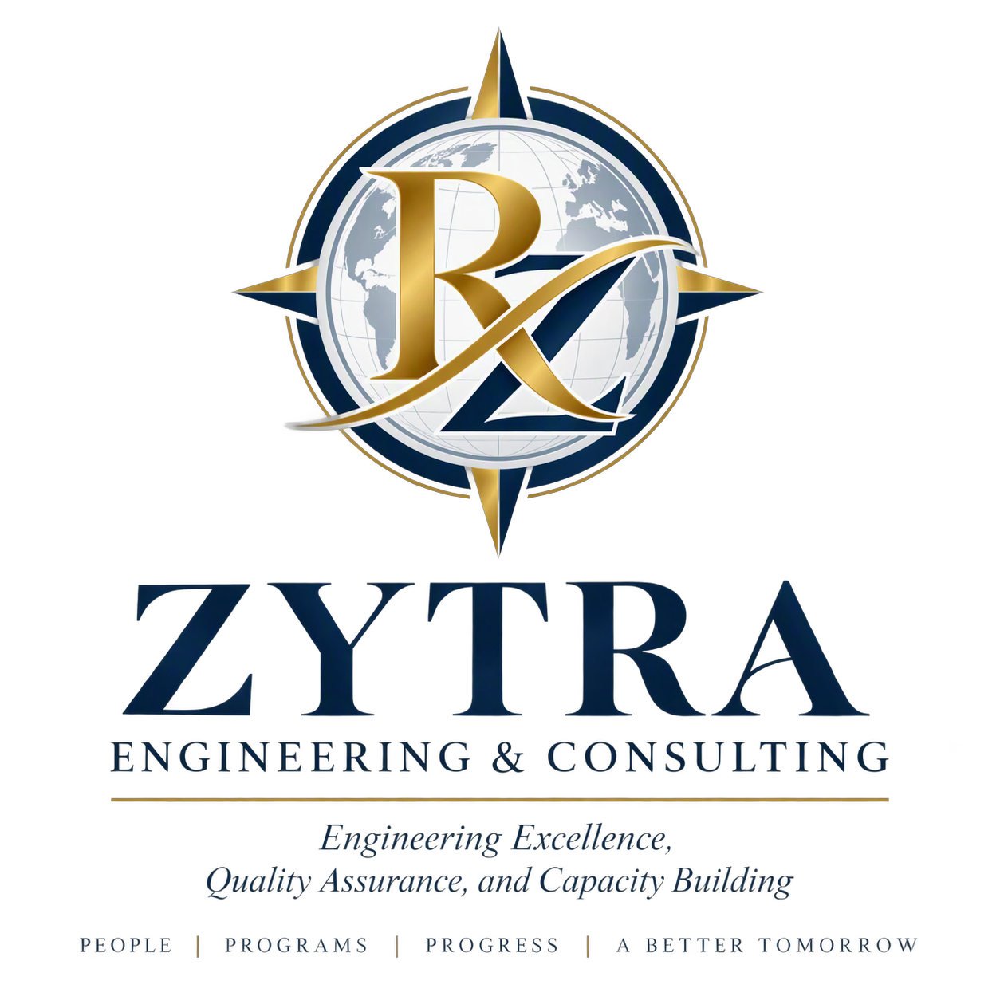

Helping engineering programs, universities, accreditation agencies, and educational organizations achieve excellence through accreditation support, outcomes assessment, faculty development, quality assurance, continuous improvement, and capacity building.
Led by Dr. Rania Al-Hammoud, P.Eng., PhD, ZYTRA Engineering & Consulting partners with institutions seeking sustainable approaches to accreditation, quality assurance, outcomes-based education, graduate attributes assessment, and continuous improvement.
With more than 15 years of experience supporting engineering programs, universities, and educational organizations, ZYTRA provides practical, evidence-informed guidance that helps institutions build sustainable processes for accreditation, assessment, and quality enhancement.
CEAB and ABET preparation, self-studies, accreditation readiness reviews, and Washington Accord alignment.
Assessment planning, curriculum mapping, performance indicators, outcomes measurement, and data-informed improvement.
Academic program reviews, institutional quality assurance frameworks, evidence-based decision making, and support for continuous quality improvement processes.
Workshops, leadership development, faculty training, coaching, and organizational change support.
Keynotes, conference presentations, executive briefings, and customized professional development workshops.
The expertise behind ZYTRA Engineering & Consulting is grounded in recognized leadership in engineering education, accreditation, quality assurance, faculty development, and continuous improvement.
Dr. Rania Al-Hammoud, P.Eng., PhD
Founder & Principal Consultant
Email: rania@zytraengineering.com
Website: zytraengineering.com
Kitchener, Ontario, Canada